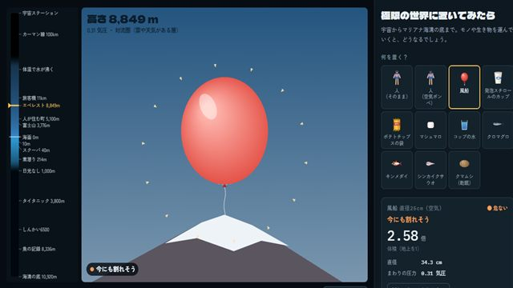
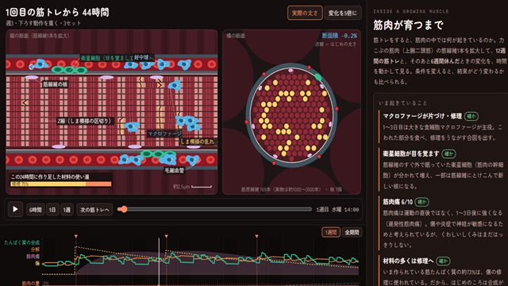

アーカイブ
まなびラボの入口には並べていない、試作や作りかけのアプリ。動きますが、内容や見た目はまだ途中です。学習用に簡単にしているところがあります。医療・健康の判断には使えません。

極限の世界に置いてみたら
宇宙からマリアナ海溝の底まで、風船・ペットボトル・人・深海魚・クマムシなどを運ぶと、どうなるか。気圧と水圧で縮む・ふくらむ・沸く。
試作（見た目に改善の余地あり）
作成 2026-10-06 ・ 更新 2026-10-07
過去の版
まなびラボの入口へ
このサイトでは Google アナリティクスで閲覧の記録を集めています（アクセス解析について）